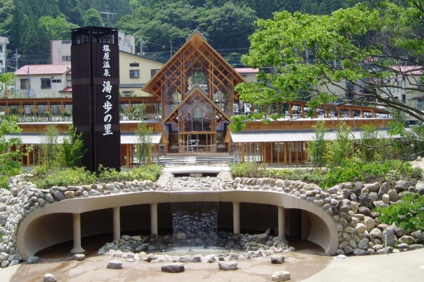

知る人ぞ知る！？
栃木県の穴場スポット8選
栃木県の穴場スポット8選
湯っ歩の里
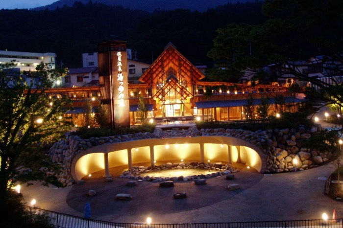
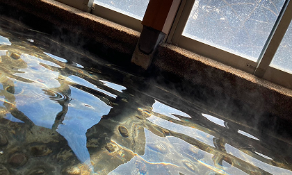
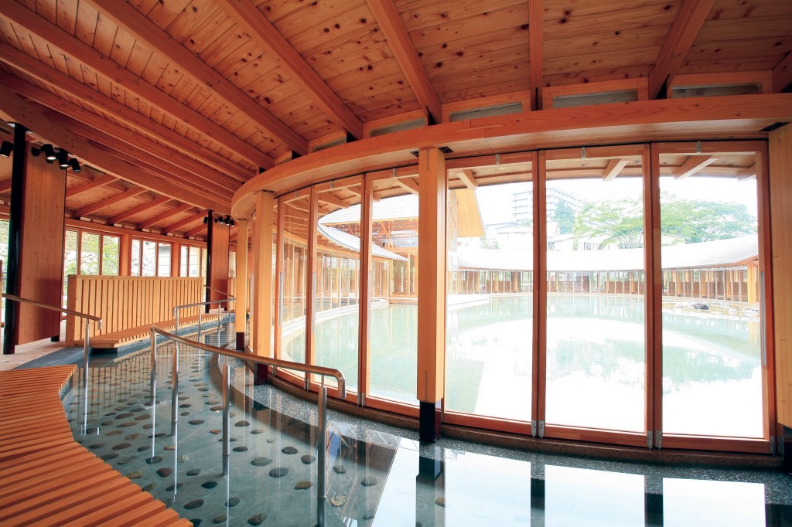
湯っ歩の里は、全長約60メートルを誇る日本最大級の足湯施設で、塩原の豊かな自然の中で名湯を気軽に楽しめます。毎分90リットル湧出する約60度の源泉を加温・加水せずかけ流しで利用し、美肌効果が期待できる良質な泉質が魅力です。園内には歩きながら足つぼを刺激できる 6種類のゾーンが設けられ、心地よい刺激でリラックス効果を高めます。さらに飲泉所では新鮮な温泉を味わうことも可能です。周囲には箒川のせせらぎや四季折々の自然が広がり、詩碑や歌碑を巡る散策も楽しめる、癒やしのスポットです。
住所
〒329-2921 栃木県那須塩原市塩原602-1
電話
0287-32-3101
営業時間
9:00～18:00 定休日:公式のホームページをご参照ください
価格
大人(高校生以上):300円
大人（65歳以上）:200円
小・中学生:200円
障がい者:200円
幼児（小学生就学前）:無料
おすすめ時期
12月～2月 寒い冬に身体を芯から温められます
58ロハスクラブ
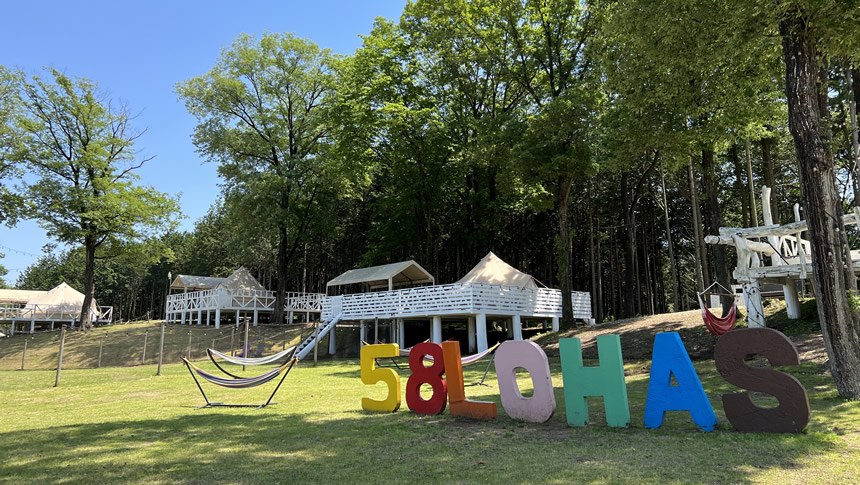
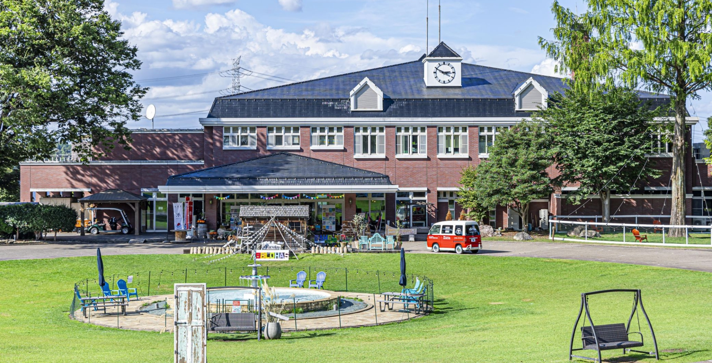
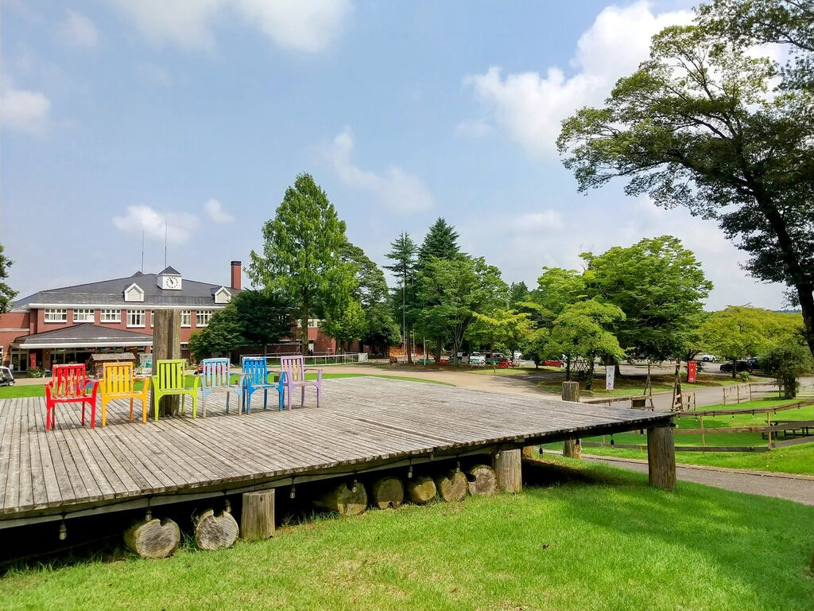
58ロハスクラブは、農業を軸に多彩な体験を提供する複合施設です。広大な敷地にはドッグランや農園、グランピングキャンプ場、レストラン、カフェが揃い、愛犬とともに自然の中でゆったりとした時間を過ごすことができます。収穫体験などのアクティビティを通じて食や農に親しめるのも魅力です。 また、生産から加工・販売までを一体で行う6次産業化に取り組み、地元の飲食店への出荷も行っています。さらに、地元生産者や手作り作家が集まるマルシェも開催され、地域の魅力や人とのつながりを感じられる場として親しまれています。
住所
〒329-1572 栃木県矢板市安沢2180
電話
0287-41-0058
営業時間
8:00～17:00 定休日:火曜日(祝日除く)
価格
公式のホームページをご参照ください
おすすめ時期
季節ごとに様々なイベントがあるので年中楽しめます
烏ヶ森公園
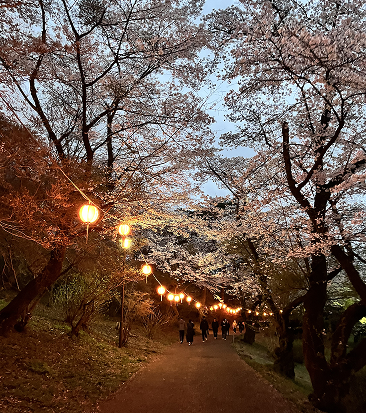
-
烏ヶ森公園は、桜・ツツジ・アジサイなど四季折々の花が楽しめる自然豊かな公園で、特に桜はソメイヨシノを中心に約600本が植えられ、例年4月上旬から中旬に見頃を迎えます。国道4号から続く桜並木も美しく、車での観賞後に園内を散策するのがおすすめです。 風の穏やかな日には池に満開の桜が映り込む幻想的な景色が広がり、夜にはぼんぼりの灯りで昼とは異なる風情を楽しめます。園内には日本庭園や全国県木園、遊具などが整備されていて、丘の上からは那須野ヶ原を一望できるほか、歴史ある神社や歌碑も点在し、自然と文化の両方を満喫できる憩いの場となっています。
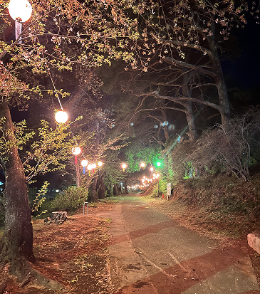
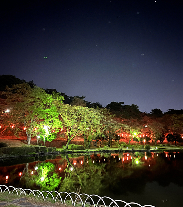
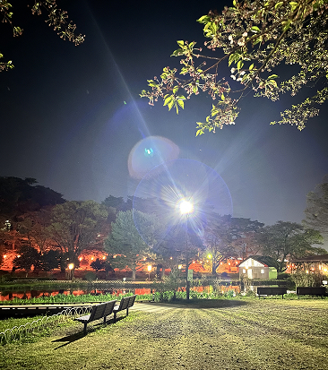
住所
〒329-2745 栃木県那須塩原市三区町636番地
電話
0285-32-8909
営業時間
24時間
価格
無料
おすすめ時期
3月～4月頃
桜が綺麗な季節です！
喜連川図書館
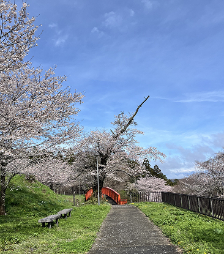
-
喜連川図書館は、児童図書コーナーや学習室、視聴覚室など設備が充実し、子どもから大人まで快適に利用できる図書館です。定期的に開催されるおはなし会や本の紹介など、子どもが本に親しめる取り組みも行われています。図書や雑誌、DVDの貸出・リクエストにも対応しており、静かに学べる環境も整っています。 また図書館の近くには高台があり、そこからの景色はとても美しく、特に春には桜が広がる絶景を楽しむことができます。本と自然の両方を満喫できる魅力的なスポットです。
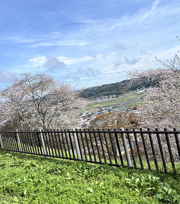
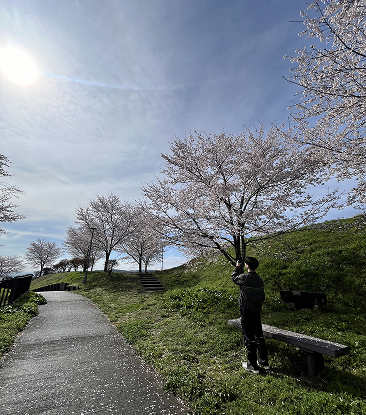
住所
〒329-1412 栃木県さくら市喜連川4397-1
電話
028-686-7111
営業時間
09:00～19:00
定休日：月曜日
年末年始
※定休日が祝日の場合は営業
価格
無料
おすすめ時期
3月～4月頃
図書館付近の高台から見下ろせる
喜連川の景色が絶景です！
まぜそば専門店 泣きむし王子
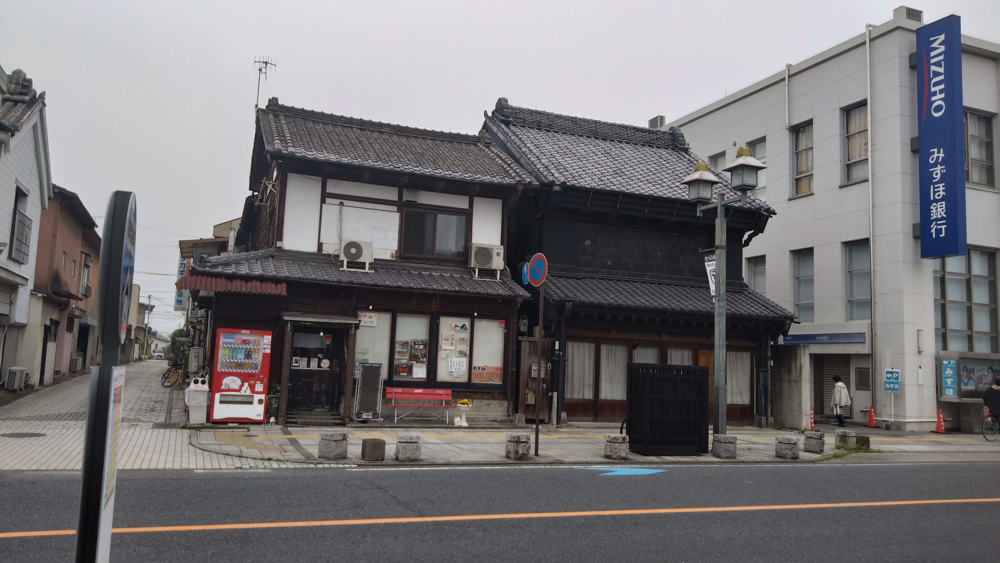
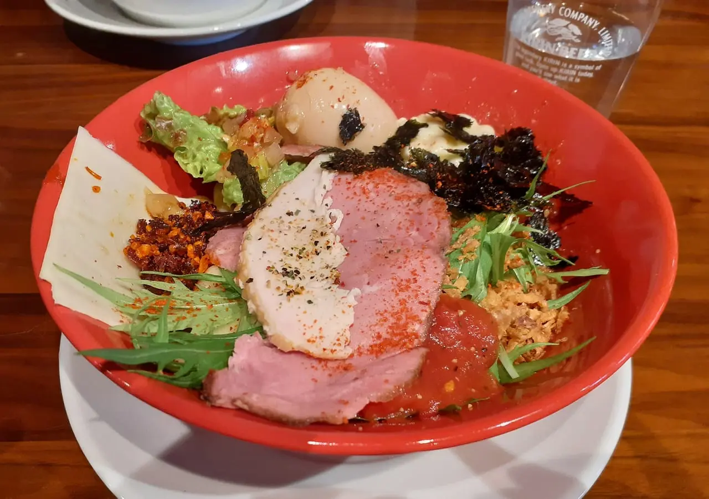
JR両毛線・東武日光線「栃木駅」から徒歩15分。 蔵の街の雰囲気が立ち並ぶところから少し外れ、大通りに出たところにあります。 栃木市内の高校生御用達のまぜそば専門店です。 入店してみると、そこはラーメン店とは思えないような古風な雰囲気が漂っています。 注文方法は、ガチャガチャによる食券システム。独特な方法で注文する形になっています。 フライドオニオン、チーズ、マヨネーズ、背脂、紅しょうが、ラー油、かつお節、ニンニク、野菜の中から好きなトッピングが選べます。 お腹が空いたら、ぜひ来店してみてください。
住所
〒328-0015栃木県栃木市万町1-20 竹楽堂貸店舗
電話
0282-28-6270
営業時間
17時30分～21時00分 定休日:毎週月曜日
価格
泣きむし王子:\1,000
泣きすぎ王子 (辛口) :\1,000 etc...
おすすめ時期
---
若の原農村公園

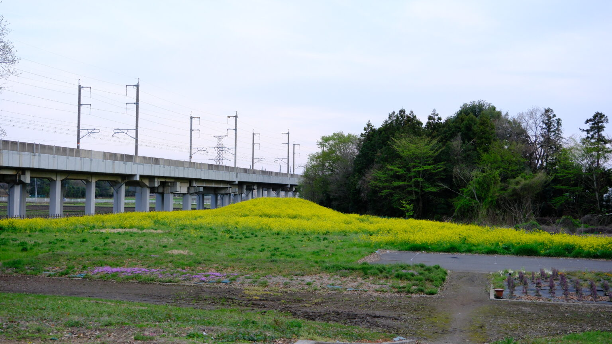
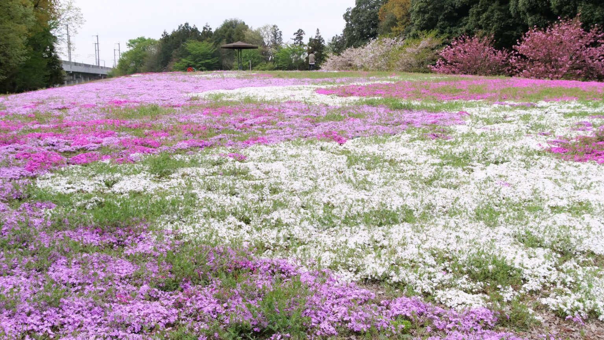
栃木県最南端の町、野木町にある秘境スポット。
例年の4月～5月ごろにかけて、芝桜が見頃になります。また町民の有志によって植えられているチューリップも見られ、タイミングが良ければ、新幹線が通過するところも見ることができます。
※春になると大勢の人が来るため、駐車スペースが少なくなる見込まれます。
路上駐車、アイドリング等はおやめくださいますようお願いいたします。
住所
〒329-0103 栃木県下都賀郡野木町若林771
電話
---
営業時間
24時間営業・年中無休
価格
駐車場料金・入場料:無料
おすすめ時期
4月中旬～下旬ごろ
喫茶ニワトコノミ
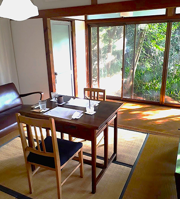
-
喫茶ニワトコノミは、小麦・卵・乳製品不使用の焼菓子と飲み物を提供する、ひとりで営む小さな喫茶店。食物アレルギーのある方でも安心して楽しめ、焼菓子はテイクアウトも可能です。 少し分かりにくい場所にある隠れ家的なお店で、かわいらしい空間と落ち着いた雰囲気が魅力的で店内はロケーションや調度品、雰囲気すべてがかわいらしく、まるで街の中の異世界のような空間が広がっています。柚子のチーズタルトや、ココナッツミルクを使ったイートイン限定の濃厚チョコレートケーキも人気で、思わず長居したくなる一軒です。
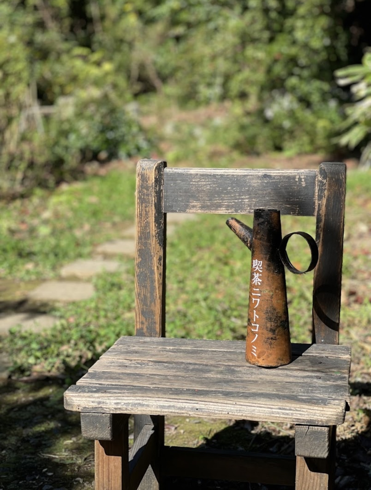
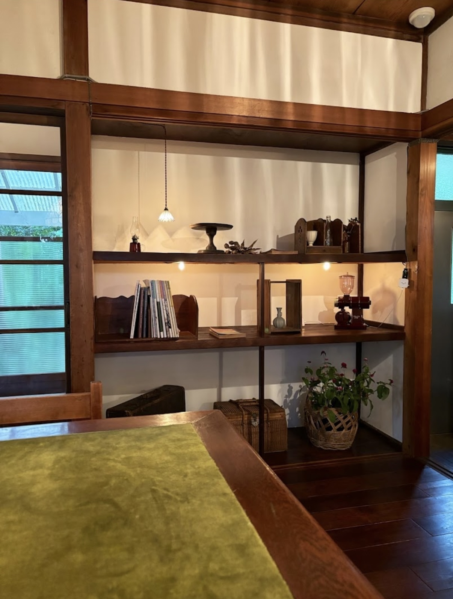
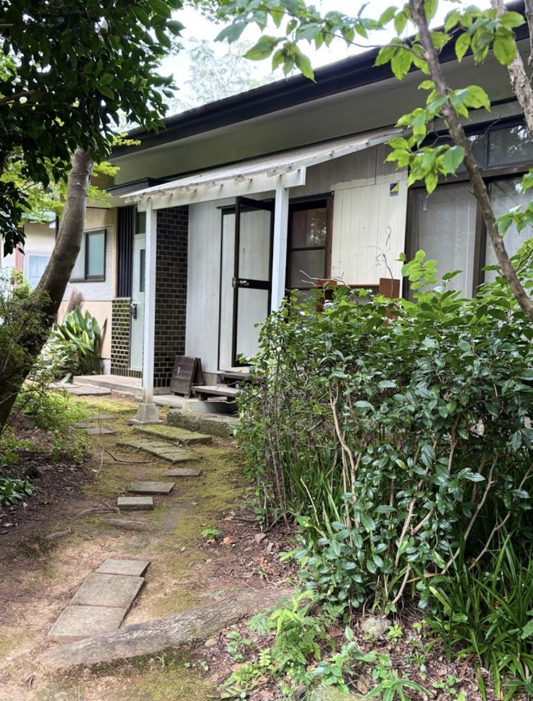
住所
〒320-0046 栃木県宇都宮市西一の沢町9-1
電話
028-648-6454
営業時間
10:00 - 16:00
定休日：月、土、日、祝日
価格
1.000～2.000円
おすすめメニュー
苺のチーズタルト
Le Poulailler
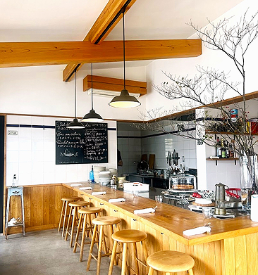
-
Le Poulaillerは、フランス人シェフが手掛ける本格フランス料理を楽しめる、一軒家のカジュアルピストロです。 落ち着いた空間の中で、厨房を張らずに本場の味を堪能できる、温かみのある雰囲気が広がります。 料理やアルコールはリクエストにも対応しており、その日の気分や好みに合わせた一皿を楽しめるのも魅力の一つ。 中でも、日本ではなかなか味わうことのできない”うさぎ”を使ったメニューは、多くの方に親しまれています。 夜には一層落ち着いた雰囲気となり、ゆったりとした時間が流れます。 店主の気さくな人柄も相まって、デートはもちろん、家族連れの方にも心地よくお過ごしいただけるお店です。
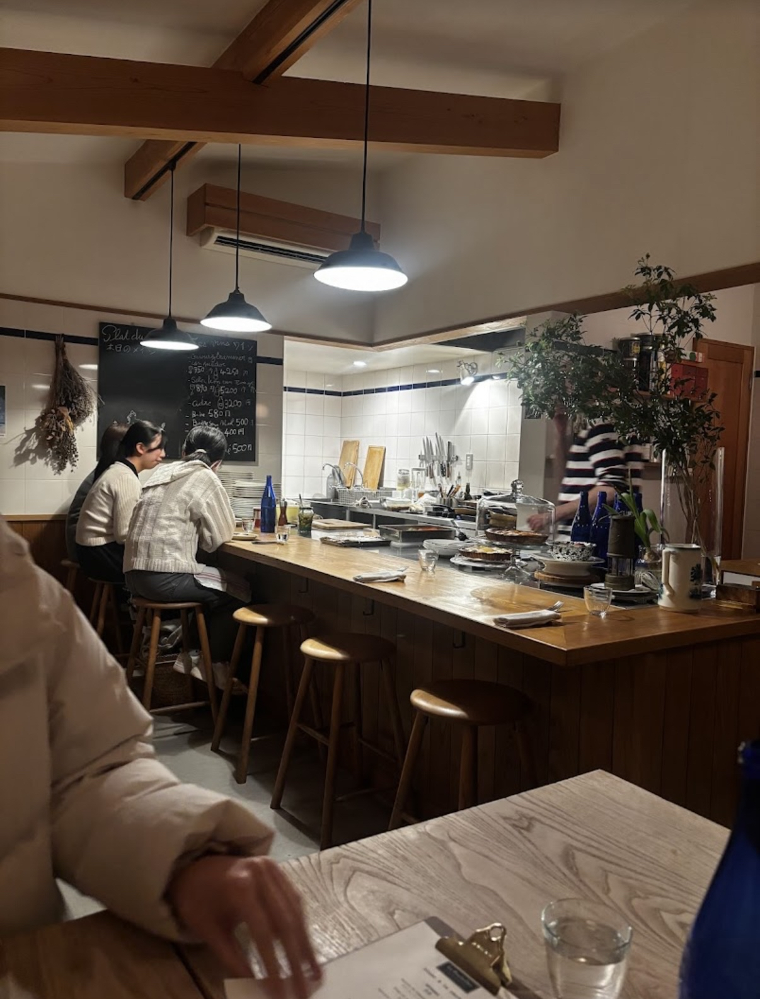
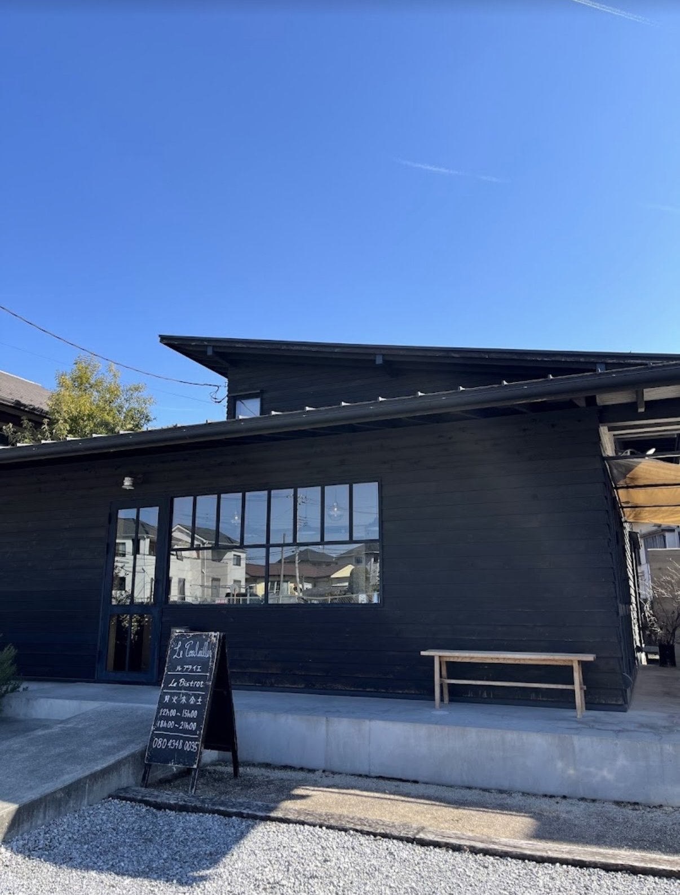
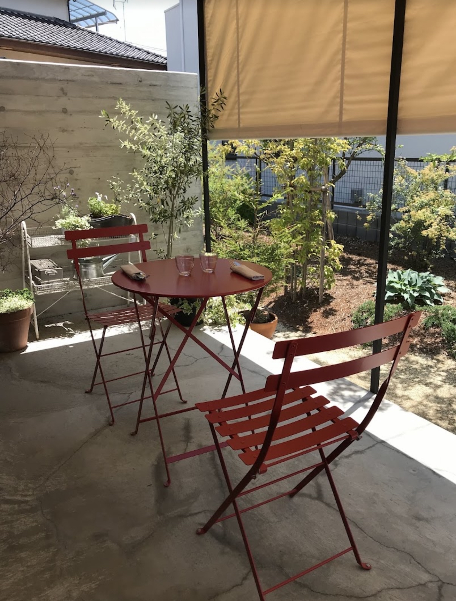
住所
〒320-0046 栃木県宇都宮市西一の沢町5－17
電話
080-4348-0035
営業時間
12:00～14:30/18:00～21:30 定休日:水曜日、日曜日
価格
1.500円～2.500円
おすすめニュー
兎のマスタードソース